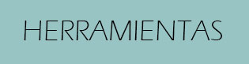
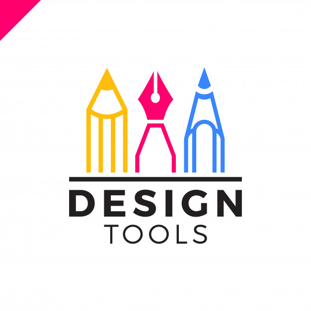
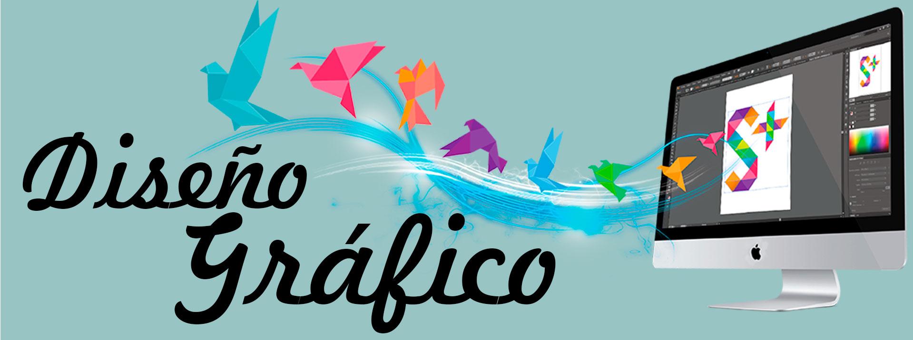
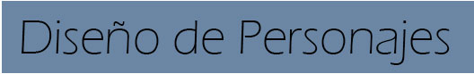
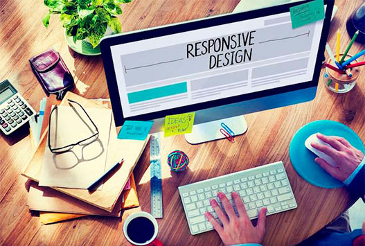
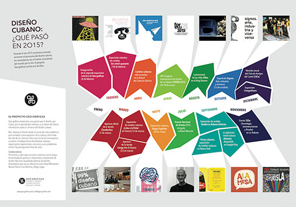
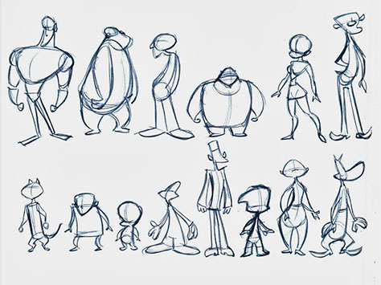
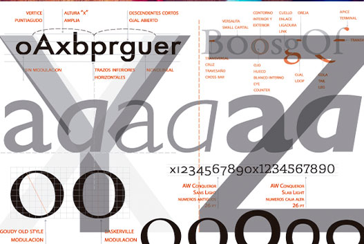
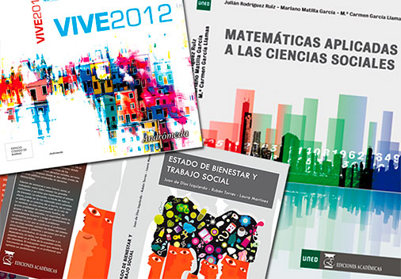
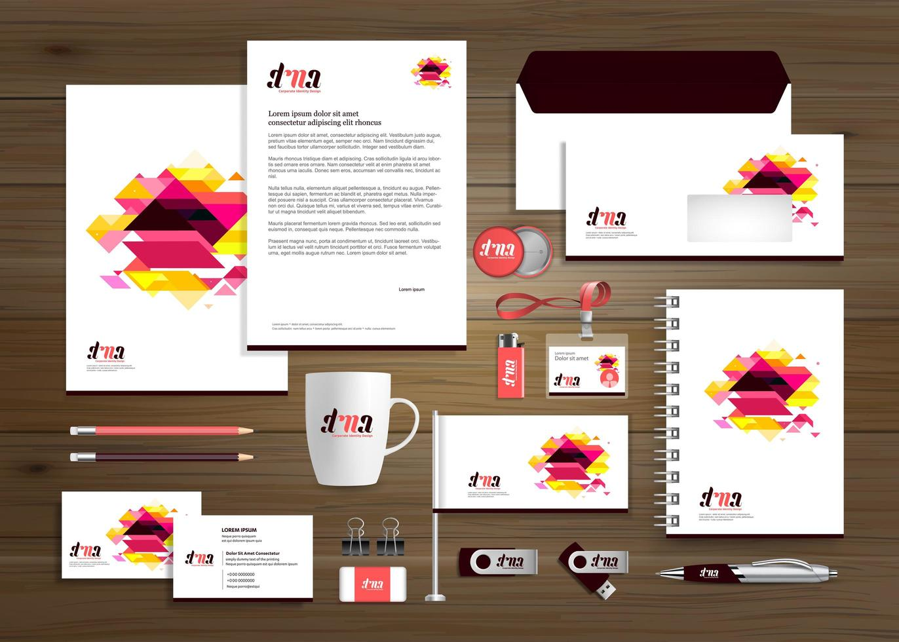

|  |  |
|  |
|  | ||
|  |  |  |
n este caso, los diseñadores web crean las páginas utilizando lenguajes de marcado como HTML o XML. Por otro lado, la parte visual de los sitios está a cargo del CSS, término utilizado para estilizar los elementos escritos en HTML.Por lo tanto, es común que los diseñadores web utilicen ambos para construir un site porque juntos definirán cómo aparecerán las páginas en los navegadores. El proceso de creación de sitios se puede realizar desde herramientas como Adobe Dreamweaver (que requerirá que el profesional sepa más sobre los códigos) y CMS que son plataformas de administración de contenido. |
La Infografía es una combinación de imágenes sintéticas, explicativas y fáciles de entender y textos con el fin de comunicar información de manera visual para facilitar su transmisión. Además de las ilustraciones, podemos ayudar más al lector a través de gráficos que puedan entenderse e interpretarse instantáneamente. Un buen cuadro gráfico debe ser sencillo, completo, ético, bien diseñado y adecuado con la información que presenta. Para ello, hay que realizar previos bocetos que presenten diferentes posibilidades. Posteriormente, hay "que escoger la más apropiada de las ideas, aquella que más ayude al lector y que combine mejor con la información". |
El diseño de personaje puede ir destinado al cómic, a la animación tradicional o 3D, al cine o incluso a un videojuego. Por ello, es necesario desarrollar con todo detalle al personaje, para que cualquier profesional pueda utilizarlo de forma coherente. En el diseño de personaje se incluyen diferentes conceptos, tales como la poses y los movimientos, el diseño del cuerpo y de la cabeza, los gestos y muecas. |
|  |  |  |
Las imágenes aportan un aspecto visual muy importante a toda composición. Estos con capaces de transmitir por sí solos un mensaje de forma adecuada.. Sin embargo, el medio de transmisión de ideas por excelencia es la palabra escrita. La esencia del buen diseño gráfico consiste en comunicar ideas por medio de la palabra escrita, combinada a menudo con dibujos o con fotografías.Además de su componente significativo, cada letra de una palabra es por sí misma un elemento gráfico, que aporta riqueza y belleza a la composición final.Es por esto, que el aspecto visual de cada una de las letras que forman los textos de una composición gráfica es muy importante. De este planteamiento se deriva que el diseñador gráfico debe emplear las letras en una composición tanto para comunicar ideas como para configurar el aspecto visual de la misma, siendo necesario para ello conocer a fondo los diferentes tipos existentes y sus propiedades, conocimientos que se agrupan en la ciencia o arte de la tipografía.
|
Estas premisas son fundamentales para el llamado diseño editorial. Esta rama del diseño gráfico se encarga de la maquetación y composición de todo tipo de publicaciones: libros, revistas, periódicos, etc. El principal objetivo del diseñador profesional es crear un diseño que resulte atractivo y funcional para el lector y conseguir una armonía perfecta entre forma y contenido. De este modo, otorga una calidad estilística a la publicación y da una buena imagen de la misma al cliente. n una publicación editorial todo importa: desde la portada, hasta la tipografía, los márgenes, lo colores, la disposición de las imágenes y el texto… Todos estos aspectos se definen en función de la personalidad de la misma, del público al que va dirigido, y del contenido que en ella se refleja. No podremos utilizar el mismo diseño para una revista de prensa del corazón que para un libro sobre medicina. Es labor del diseñador saber captar la esencia de cada publicación y saber transmitir su esencia a través de su diseño.
|
La identidad corporativa es la representación o imagen conceptual que un espectador tiene de una organización o de una empresa, la imagen corporativa es una parte de la identidad corporativa que hace referencia a los aspectos visuales de dicha representación. La identidad corporativa no trata sólo del logotipo de la empresa, la identidad corporativa es la imagen, las sensaciones, las emociones, la filosofía y los valores que la empresa transmite al exterior y por extensión, la representación de todo ese conjunto de elementos que nosotros como espectadores percibimos ella. La identidad corporativa de una empresa abarca tanto aspectos tangibles de carácter estético como son el diseño de logotipo (su representación visual), el diseño gráfico corporativo (el desarrollo de todos los elementos de comunicación de una empesa), tipografías, colores, papeleria corporativa, los elementos de comunicación externa e interna, publicidad, protocolo, arquitectura corporativa, como aspectos intangibles.
|
SS